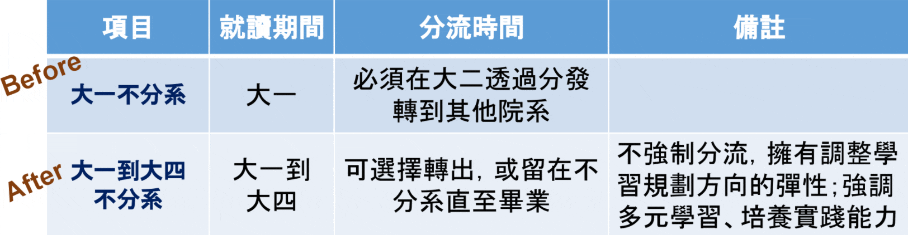
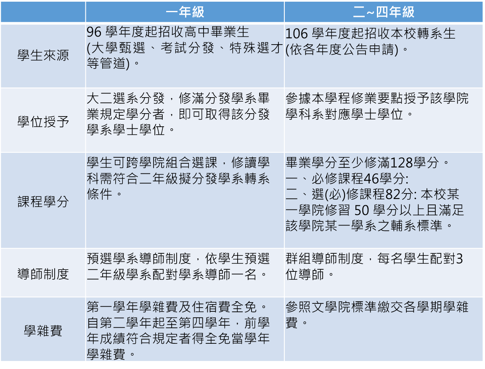
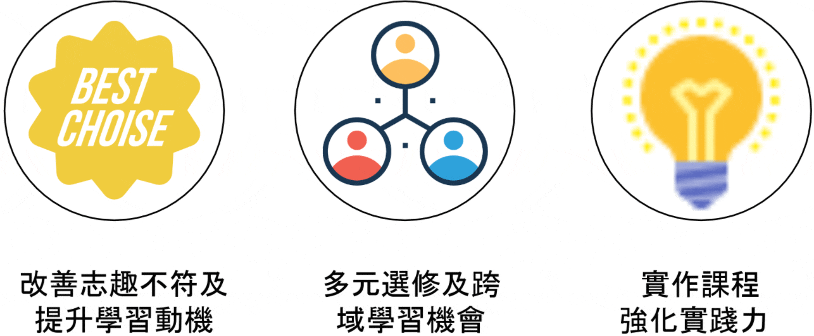
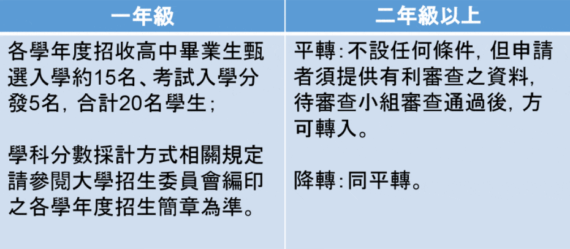
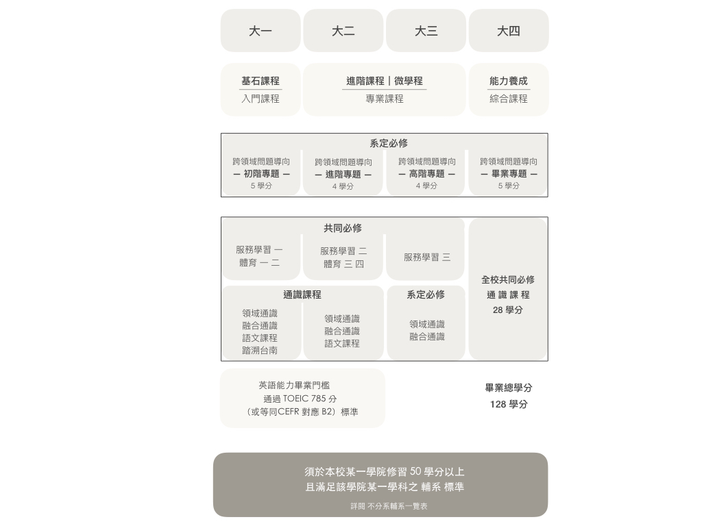

學程常見問題
【關於】什麼是「全校不分系-1」?
現有學士學位學程的進化版
「全校不分系」是因應社會變遷與未來需求而進化的人才培育新模式，希望藉此培養學生解決問題的能力與強化學生的跨域整合能力，以培育未來社會所需或可能所需之人才。
【關於】什麼是「全校不分系-2」?
【關於】加入全校不分系的優點是？
【入學】如何成為成功大學全校不分系學士學位學程學生？
【分發】全校不分系學士學位學程一年級新生如何分發學系? 是否授予學系學士學位？
提供多元的課程學習，透過延後分系、跨領域學習，探索興趣並發展能力，大一自由選課，充分發掘自已的興趣，大二再分流選系，符合轉系規定者優先分發，修滿分發學系畢業規定學分者，即可取得該分發學系學士學位。
分發學系的規定： 依據「國立成功大學不分系學士班選系分發要點」 (查閱網站：學士學位學程/相關法規)辦理分發二年級學系。
相關連結：不分系分發承認〈主修〉一覽表
【分發】全校不分系學士學位學程升二年級時分發學系與其他學系學生轉系有何不同？
全校不分系學士學位學程升二年級時除了醫學系外全校各學系皆可申請分發，一年級學年課業成績達到希望分發的學系當年度所規定招收轉系生申請條件(基本門檻)即可逕行分發，受轉系招收名額限制。
詳見 不分系分發承認〈主修〉一覽表
若没有招收轉系生：
經該學系及選系分發會議通過即可分發。
成功大學各學系轉系條件規定：
查閱網站：成大首頁/行政單位/教務處/註冊組/相關法規/各學系轉系條件
【選課】全校不分系的修課方式與必修專題？
不分系主要以問題導向和專題製作為學習方向，希望同學透過自己有興趣或發掘的問題去修課同時發展專題，因此畢業標準和一般學系的同學不同，會著重專題課程，未來也會針對同學所修課程比例授予學位。
【選課】全校不分系學士學位學程的選課方式？
可至全校各學系選讀您想修讀的課程，除一般課程外，另選讀藝術、人文、美學等通識課程，學生依據個人興趣，每學期在16~25學分規範中組合跨學院、學系選課，選課前有輔導選課說明會由學士學程系學會學長姊解說分析如何選課並於選課期間協助學弟妹完成選課作業。
除此之外，須遵守全校共同修課規定。